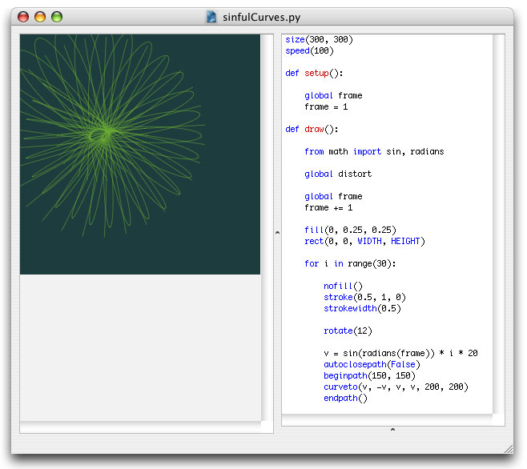
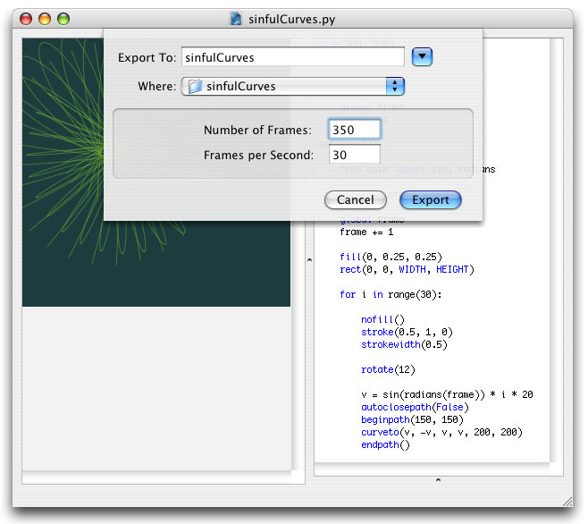

NodeBox not only exports to PDF documents and images, but handles animation as well, which can be exported to QuickTime movies. Using the same syntax as drawing, your can turn your script into an animation, doing all kinds of wonderful, lively things.
For an animation to work, it needs three things:

You may already know a little bit about defining your own commands from the Templating tutorial.
The setup() command is run once, at the beginning of the animation, and draw() is run on each frame, or step, in the animation. Take a look at the example above. What I'm doing there in the setup() definition, is declaring a global variable named frame, which I'm going to use later on in the draw() to keep track of the animation frame being rendered on the canvas. The variable needs to be a global, because otherwise setup() and draw() can't communicate, or share the variable.
Now examine the draw() definition. It's a typical example of an animation script. The draw() command is called repetively by NodeBox, rendering frame after frame of animation. In the example above, the draw() definition basically does four things:
Notice the use of a mathematical sine function in the draw() definition. A sine is an oscillating function that yields values between -1.0 and 1.0 (and then back down to -1.0), but not in a linear fashion. When it reaches -1 or 1, it goes slower, and goes fastest when it crosses 0. This is useful for animation that eases in or eases out.
To use the sin() function, import it from the Python math package along with the radians() function (sines work with radians like PI). In the example above I supply the frame variable as radians to the sine function and multiply it with a differnt number for each curve, which gives me a fluid distortion vector that eases in and eases out each curve.
A sine function typically looks like this:
from math import sin, radians ease = sin(radians(x)) * y
You can export an animation as a Quicktime movie. Select "Export as Quicktime Movie..." from the NodeBox File menu, or press shift-apple-e. You can select a number of frames to export, and a movie frame rate.
The Quicktime functionality in NodeBox is based on PyQTSequence written by Bob Ippolito.

The resulting movie is uncompressed, so it will likely be large in file size. You can compress it if you have Quicktime Pro, or some other movie editor.
...and you have a movie to put on your website!